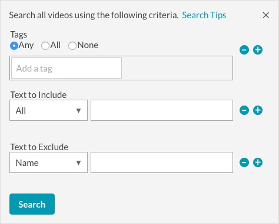

---
title:創建實時事件頁內體驗
parent: Live Event 
grandparent: Experiences
description: In this topic you will learn how to customize the content of a Live Event In-Page Experience. 
---

<article class="bcls-article">
  <h1>創建現場活動頁內體驗</h1>
  <summary>{{ page.description }}</summary>
  <section class="bcls-section">
    <p>圖庫提供即時活動頁面內模板，可用於提供現場活動作為頁面體驗的一部分。Brightcove 提供多種提供即時串流視訊的選項。看<a href="https://live.support.brightcove.com/get-started/delivering-live-streams.html">傳送直播</a>有關所有選項的列表。如需使用即時模組廣播即時事件的詳細步驟集，請參閱：</p>
    <ul>
      <li> <a href="https://live.support.brightcove.com/get-started/step-step-using-live-module-telestream-wirecast.html">一步步：將實時模塊與Telestream Wirecast一起使用</a></li>
      <li><a href="https://live.support.brightcove.com/get-started/step-step-using-live-module-open-broadcaster-software-obs.html">一步步：將實時模塊與Open Broadcaster Software（OBS）一起使用</a></li>
    </ul>
    <aside class="bcls-aside bcls-aside--information">筆記：即使播放程式設定為不自動播放，即使播放程式的「即時活動頁面體驗」也會在桌面瀏覽器中自動播放。這是經過設計的在倒數計時完成後，模擬工坊會強制玩家進行遊戲，讓坐在頁面上等待活動開始的使用者可以開始觀看，而無需再次點擊播放。實時事件頁內體驗不會在 iOS 或 Android 設備上自動播放。</aside>
    <p>要創建新的現場活動頁內體驗，請創建新的頁內體驗，然後選擇<strong>直播活動頁內</strong>模板。</p>
    <p>即時事件頁面內範本有一些設定和內容項目不存在於其他頁面內體驗範本。</p>
    <figure class="bcls-figure"></figure>
    <ol>
      <li><a href="#now_showing">現在顯示給查看者</a></li>
      <li><a href="#event_state">直播活動狀態</a></li>
      <li><a href="#social">社交分享</a></li>
      <li><a href="#image_placeholder">圖像佔位符</a></li>
      <li><a href="#countdown">活動倒計時</a></li>
      <li><a href="#text_placeholder">文字佔位符</a></li>
      <li><a href="#reminder">日曆提醒</a></li>
      <li><a href="#videos_placeholder">視頻佔位符</a></li>
    </ol>
  </section>
  <section class="bcls-section">
    <h2 id="now_showing">現在向觀眾顯示</h2>
    <p>這<strong>現在顯示給查看者</strong>設置用於配置哪個<a href="#event_state">現場活動狀態</a>向觀看者顯示。您 (發行者) 負責變更即時事件狀態。資源庫永遠不會自動切換即時事件狀態。</p>
    <figure class="bcls-figure"></figure>
    <p>點擊<strong>改變</strong>並選擇應顯示的狀態。更改此設置後，無需重新發布體驗。</p>
    <figure class="bcls-figure"></figure>
    <aside class="bcls-aside bcls-aside--information">筆記：狀態更改出現在生產站點上之前可能需要幾分鐘的時間。</aside>
  </section>
  <section class="bcls-section">
    <h2 id="event_state">即時事件狀態</h2>
    <p>即時活動頁面體驗的體驗狀態與其他頁面內體驗類型不同。按一下頁面頂端的連結，即可自訂上述各狀態的外觀。</p>
    <figure class="bcls-figure"></figure>
    <p>即時活動頁面體驗有下列狀態：</p>
    <ul>
      <li><strong>活動前</strong> -直播活動開始前直播體驗將如何出現</li>
      <li><strong>居住</strong> -直播活動進行時體驗將如何出現</li>
      <li><strong>事件後</strong> -直播活動結束後體驗將如何出現</li>
    </ul>
    <p>要編輯不同的體驗狀態，請單擊狀態，然後單擊<a href="/experiences/inpage/adding-components-page-experience.html">為體驗添加組件</a>如所須。這<strong>佈局</strong>菜單為每個狀態提供了更多的自定義選項。</p>
  </section>
  <section class="bcls-section">
    <h2 id="social">社交分享</h2>
    <p>社交分享選項提供連結，可分享活動和影片到您的社交媒體帳戶。</p>
    <p>要配置社交分享設置，請點擊<strong>配置共享</strong>鏈接或點擊<strong>設置&gt;社交</strong>在左側導航欄中。社交設定包括：</p>
    <ul>
      <li><a href="#event_sharing">活動分享</a></li>
      <li><a href="#video_sharing">影片分享</a></li>
    </ul>
    <div class="BCL-subsection">
      <h3 id="event_sharing">活動分享</h3>
      <p>活動分享設置允許觀眾將活動頁面分享到社交媒體帳戶。請依照下列步驟設定事件詳細資料：</p>
      <ol class="bcls-tasklist-restart">
        <li>要添加一個<strong>活動圖片</strong>， 點擊<strong>添加圖片</strong>然後：
          <ul>
            <li>從檔案系統拖曳影像，然後將其放置到放置區域</li>
            <li>點擊<strong>瀏覽</strong>然後從文件系統中選擇一個圖像</li>
            <li>輸入遠端影像檔案的 URL</li>
          </ul>
          <figure class="bcls-figure"></figure>
        </li>
        <li>輸入一個<strong>活動標題</strong>和<strong>活動說明</strong>。</li>
        <li>選擇事件共享選項的顯示方式，<strong>分享</strong>文字或顯示社交圖標。</li>
        <li>選取可用的共用選項。
          <figure class="bcls-figure"></figure>
        </li>
        <li>輸入<strong>頁面網址</strong>體驗將嵌入其中的地方。</li>
        <li>點擊<strong>產生</strong>。這將生成可以添加到<code translate="No">&lt;head&gt;</code>頁面的一部分。這項功能可讓社交網站在觀眾分享您的體驗時，顯示活動圖片、標題和說明。</li>
      </ol>
    </div>
    <div class="BCL-subsection">
      <h3 id="video_sharing">視訊分享</h3>
      <p>視頻分享設置允許觀眾將視頻分享到社交媒體帳戶。請依照下列步驟設定視訊共用：</p>
      <ol class="bcls-tasklist-restart">
        <li>選擇視頻共享選項的顯示方式，<strong>分享</strong>文字或顯示社交圖標。</li>
        <li>選取可用的共用選項。
          <figure class="bcls-figure"></figure>
        </li>
        <li>點擊<strong>保存</strong>保存更改。</li>
      </ol>
    </div>
  </section>
  <section class="bcls-section">
    <h2 id="image_placeholder">影像預留位置</h2>
    <p>活動前和事件後狀態提供顯示英雄影像的能力。</p>
    <p>若要新增主體影像：</p>
    <ol class="bcls-tasklist-restart">
      <li>點擊<strong>添加圖片</strong>關聯。</li>
      <li>進入一個<strong>名稱</strong>用於圖像（僅允許使用ASCII字符）。
        <figure class="bcls-figure"></figure>
      </li>
      <li>若要指定影像，您可以：
        <ul>
          <li>從檔案系統拖曳影像，然後將其放置到放置區域</li>
          <li>點擊<strong>瀏覽</strong>然後從文件系統中選擇一個圖像</li>
          <li>輸入遠端影像檔案的 URL</li>
        </ul>
      </li>
      <li>設置<strong>圖片大小</strong>。
        <ul>
          <li><strong>裁剪圖像</strong> -在中央裁剪圖像，使其占據整個16：9的空間，但是頂部/底部或左側/右側的某些部分會丟失，具體取決於圖像的長寬比</li>
          <li><strong>將圖像包含在組件範圍內</strong> -將圖片包含在16：9的空間範圍內，但根據寬高比，在圖片的上方/下方或左側/右側將出現一些空白</li>
          <li><strong>拉伸圖像</strong> -忽略圖像的長寬比，並強制其完全填充16：9的空間；這會使圖像變形</li>
          <li><strong>原始影像尺寸</strong> -使用原始圖像尺寸，不調整尺寸；沒有反應</li>
        </ul>
      </li>
      <li>選取應顯示影像的狀態。</li>
      <li>點擊<strong>保存</strong>將圖像添加到體驗中。</li>
    </ol>
  </section>
  <section class="bcls-section">
    <h2 id="countdown">事件倒數</h2>
    <p>倒數計時器會顯示即時活動開始前的月數、天數、小時、分鐘和秒數。倒數計時器範例如下所示。</p>
    <figure class="bcls-figure"></figure>
    <aside class="bcls-aside bcls-aside--information">筆記：倒數計時器的風格可以通過點擊左側導航中的 <strong>STYLE</strong> 來設計風格。</aside> 
    <p>若要新增倒數計時器，請依照下列步驟執行：</p>
    <ol class="bcls-tasklist-restart">
      <li>點擊<strong>配置事件倒數</strong>頁面上的鏈接。事件設定頁面隨即開啟。</li>
      <li>查看<strong>顯示活動倒數</strong>。</li>
      <li>設置<strong>開始日期</strong>，<strong>開始時間</strong>和<strong>活動時區</strong>。</li>
      <li>進入一個<strong>過渡訊息</strong>。當倒數計時器達到零，但直播開始前，將顯示此訊息。
        <figure class="bcls-figure"></figure>
      </li>
      <li>點擊<strong>保存</strong>。</li>
    </ol>
  </section>
  <section class="bcls-section">
    <h2 id="text_placeholder">文字預留位置</h2>
    <p>事件前和 POST 事件狀態提供顯示靜態文字的功能。</p>
    <p>若要新增靜態文字：</p>
    <ol class="bcls-tasklist-restart">
      <li>點擊<strong>添加文字</strong>關聯。</li>
      <li>輸入要新增至體驗的文字。工具列可用於格式化文字。
        <figure class="bcls-figure"></figure>
      </li>
      <li>點擊<strong>保存</strong>將文字添加到體驗中。</li>
    </ol>
  </section>
  <section class="bcls-section">
    <h2 id="reminder">行事曆提醒</h2>
    <p>您可以設定行事曆提醒，讓使用者可以按一下連結以下載行事曆提醒。範例行事曆提醒如下所示。</p>
    <figure class="bcls-figure"></figure>
    <p>點擊提醒將顯示行事曆選項。</p>
    <figure class="bcls-figure"></figure>
    <aside class="bcls-aside bcls-aside--information">筆記：日曆提醒的樣式可以通過點擊設置樣式<strong>風格</strong>在左側導航中。</aside>
    <p>若要新增行事曆提醒，請依照下列步驟執行：</p>
    <ol class="bcls-tasklist-restart">
      <li>點擊<strong>配置日曆提醒</strong>頁面上的鏈接。事件設定頁面隨即開啟。</li>
      <li>查看<strong>顯示“添加到日曆"提醒</strong>。</li>
      <li>設置<strong>結束日期</strong>，<strong>時間結束</strong>和<strong>活動標題</strong>。這<strong>活動說明</strong>和<strong>活動地點</strong>是可選的。
        <figure class="bcls-figure"></figure>
        <aside class="bcls-aside bcls-aside--information">筆記：界面會略有不同，如果<strong>顯示事件倒計時</strong>選項被選中。</aside>
      </li>
      <li>點擊<strong>保存</strong>。</li>
    </ol>
  </section>
  <section class="bcls-section">
    <h2 id="videos_placeholder">視訊預留位置</h2>
    <p>在活動前、現場和活動後狀態中可以顯示不同的影片。視頻雲端視頻和 YouTube 視頻可以添加到體驗中。</p>
    <aside class="bcls-aside bcls-aside--information">筆記：在將 YouTube 視頻添加到體驗之前，您必須<a href="/settings/configuring-youtube-settings.html">配置 YouTube 設置</a>.</aside>
    <p>要選擇要顯示的視頻：</p>
    <ol class="bcls-tasklist-restart">
      <li>點擊<strong>選擇影片</strong>鏈接或點擊<strong>影片</strong>在左側導航欄中。這<strong>選擇一個視頻</strong>對話框將會出現。
        <figure class="bcls-figure"></figure>
      </li>
      <li>選取要選取視訊的狀態：
        <ul>
          <li>活動前</li>
          <li>生活</li>
          <li>活動後</li>
        </ul>
      </li>
      <li>選擇視頻<strong>來源</strong>：
        <ul>
          <li><strong>視頻雲</strong> -將使用視頻雲視頻內容</li>
          <li><strong>YouTube</strong> -將使用YouTube視頻內容</li>
        </ul>
      </li>
      <li><a href="#searchvids">搜索視頻</a>，單擊將其選中，然後單擊<strong>選擇</strong>。影片將會新增至視訊清單。
        <figure class="bcls-figure"></figure>
      </li>
      <li>點擊<strong>居住</strong>或者<strong>賽后</strong>部分，或單擊<strong>選擇視頻</strong>選擇其他視頻。</li>
    </ol>
    <p>互動和伴隨組件可以添加到活動前和活動後的視頻，並在播放視頻時顯示。互動包括<strong>鏈接</strong>和<strong>牌</strong>並在播放視頻時作為播放器的一部分顯示。隨播組件包括<strong>的HTML</strong>，<strong>圖片</strong>和<strong>文本</strong>對象，並顯示在播放器外部。</p>
    <aside class="bcls-aside bcls-aside--information">筆記：互動和配套組件不適用於直播視頻，除非它是 VOD 資產。</aside>
    <p>已配置互動功能的視頻將在<strong>互動性</strong>指示互動類型的列。如需新增和設定互動與隨附元件的相關資訊，請參閱：</p>
    <ul>
      <li><a href="/experiences/inpage/adding-interactions-page-experience.html">將互動添加到頁內體驗</a></li>
      <li><a href="/experiences/inpage/configuring-companion-components-page-experience.html">配置伴隨組件以實現頁內體驗</a></li>
    </ul>
  </section>
  <section class="bcls-section">
    <h2 id="live_video">選取即時影片</h2>
    <p>當。。。的時候<strong>居住</strong>處於選擇狀態，則必須輸入實時視頻資產的視頻雲視頻ID或參考ID。實時視頻的來源將始終是視頻雲。</p>
    <figure class="bcls-figure"></figure>
    <p>選擇<strong>參考編號</strong>選項可讓您更改媒體模塊中實況視頻的參考ID，而不必更改體驗中的視頻ID。例如，您可以選擇使用參考ID表示當前的實時視頻<strong>現場活動</strong>。創建現場體驗時，請選擇<strong>參考編號</strong>然後輸入<strong>現場活動</strong>。</p>
    <figure class="bcls-figure"></figure>
    <p>現在，每當有新的直播活動時，都可以使用媒體模塊將該視頻的參考ID設置為<strong>現場活動</strong>。</p>
    <figure class="bcls-figure"></figure>
    <p>使用參考 ID，即時體驗不需要在新事件開始時編輯和重新發佈。啟動新事件時，請使用「媒體」模組編輯即時視訊資產的視訊參考 ID。</p>
  </section>
  <section class="bcls-section">
    <h2 id="searchvids">搜尋影片</h2>
    <p>這<strong>搜索</strong>字段可用於搜索視頻。搜尋 Video Cloud 影片時，圖庫會搜尋影片名稱、簡短和完整說明、標籤和自訂欄位。搜尋 YouTube 影片時，「圖庫」會使用 YouTube 搜尋應用程式介面。</p>
    <figure class="bcls-figure"></figure>
    <p>點擊<strong>更多搜尋選項</strong>以便更好地控制搜索哪些字段以及包含和排除文本。請注意，只有在使用視訊雲端來源時，才能使用此選項。</p>
    <figure class="bcls-figure"></figure>
  </section>
</article>